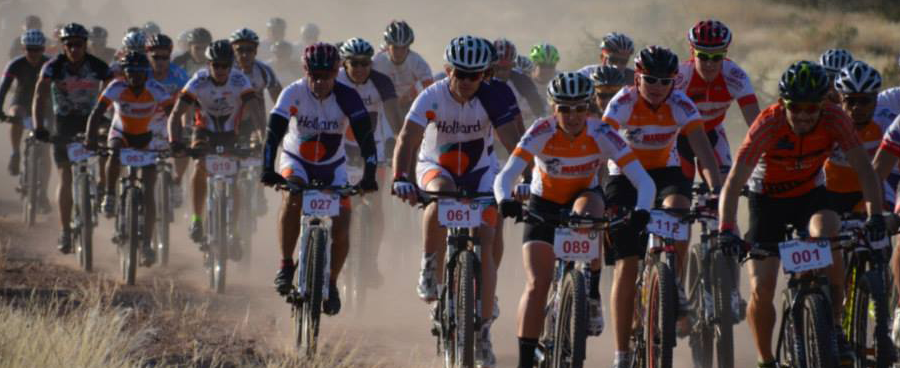

Bicycles
Bike users told us that there was a gap in the market. Tubeless riders need a milk-type tyre sealant, but conventional latex-based tubeless bike sealants are weak, they dry out rapidly into nasty rubber balls, and need to be cleaned out. While most water-based inner tube sealants have not been developed with bicycles in mind. In a few short years, OKO has solved these issues and made huge strides in the bicycle market.
2010: Puncture Free Bike (lighter and stronger than the brand leading tubed product) launches at Eurobike
2012: X-Treme (the strongest MTB sealant ever) launches in Asia at the Taiwan show
2013: OKO Magic Milk™ (the <lo-fat>™ lightweight tubeless sealant) overcomes all of the problems suffered by other latex ‘milk’ products
2014: Self-Sealing Bike Inner Tubes create puncture protection solutions in all popular tyre sizes – and the range keeps growing
2015: Habitat for Humanity UCI World Cup MTB/XC team switches from the brand leader to OKO Magic Milk™ and they are still with us
2016: Madison, the UK’s leading bicycle trade distributor, launches its Nutrak brand range of bike sealants by OKO after testing all others
2017: David Rosa wins his 8th Portugese MTB Championship with Magic Milk™: see his OKO video. Leading World Cup Downhill team NS Bikes Factory Racing switch from the brand leader to Magic Milk™. New bigger Magic Milk™ sizes are launched, by popular demand
Why choose Magic Milk™? It is synthetic latex-based so it is ammonia free, allergy free, does not ball up, and is rim & tyre friendly. It clings around the inside of the tyre like nothing else can. It lasts longer than other tubeless products and can be topped up without removing the tyre.
OKO sealants are easier to apply than any other, with the unique bottle cap containing a valve core remover and a Schrader valve-sized pouring spout.
The OKO Tyre Sealant Injector is a patented syringe device that can cleanly and accurately dispense sealant (or other liquids), plus it contains a double screw fitting for both Presta and Schrader valves. Now in 60ml and 150ml barrel sizes to work with all tyre types.
Self-sealing OKO-filled tubes now include 29 inch MTB and NEW FOR 2017 – 27.5″ MTB and 700C Road Race, with long 48mm valves including high quality removable-core Presta valves. And Dutch valve (or if you prefer, ‘Woods or Dunlop’ ) 700C touring tubes. So it is even easier to obtain OKO tyre protection.